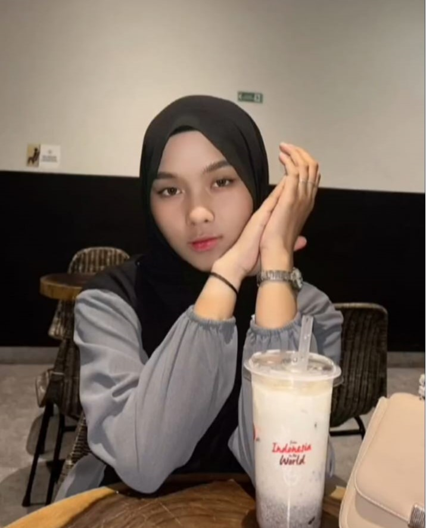
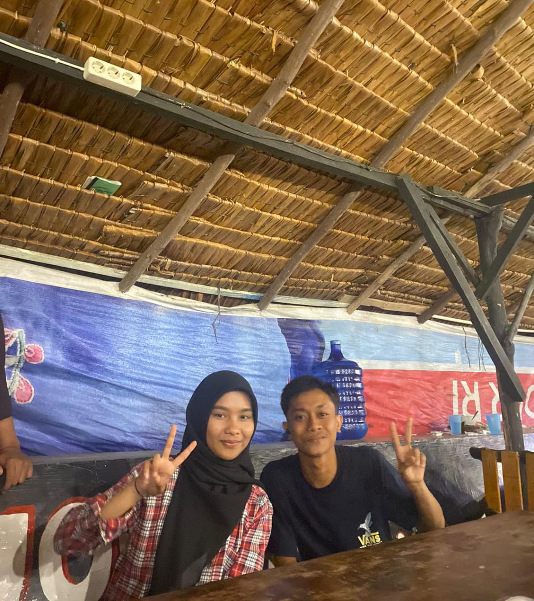
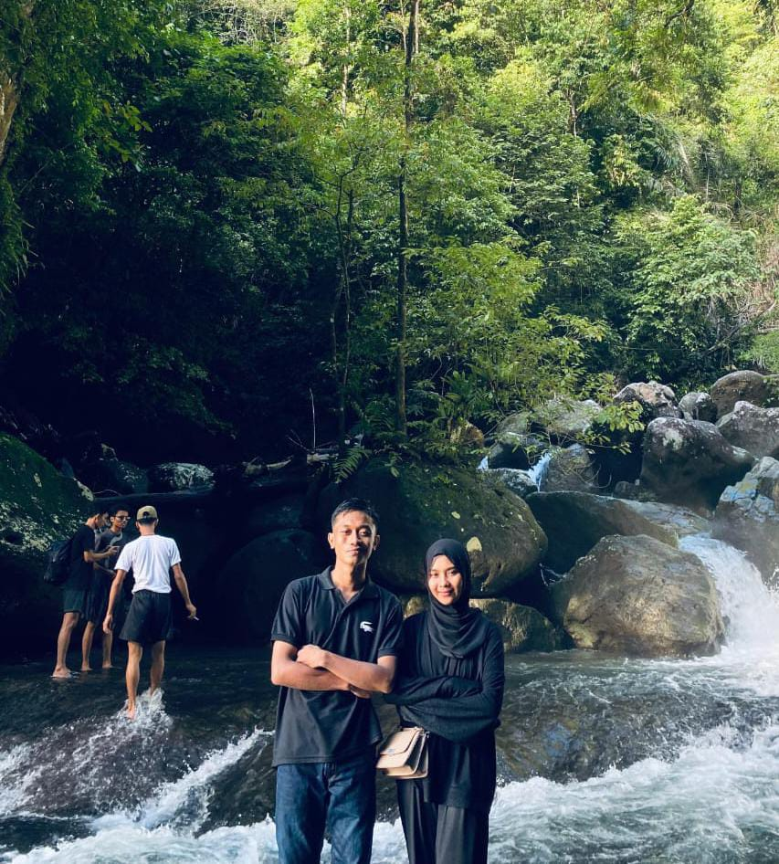

Tepat 20 tahun yang lalu, tepat nya pada tanggal 10 Februari 2005, lahirlah seorang wanita yang cantik parasnya, baik budi pekertinya, dan penuh kasih sayang. Kehadirannya di dunia membawa kebahagiaan yang tiada tara bagi keluarga dan orang-orang yang menyayanginya. Wanita ini adalah anugerah yang luar biasa, seorang perempuan yang tidak hanya peduli dengan orang-orang di sekitarnya, tetapi juga selalu memberikan perhatian dan cinta tanpa pamrih. Dengan senyumnya yang tulus, ia mampu mencairkan suasana, memberikan kekuatan, dan menjadi alasan banyak orang merasa dihargai.
Dia adalah sosok yang selalu menginspirasi dengan kelembutannya, keteguhannya, dan semangat hidupnya yang tak pernah padam. Dalam setiap langkahnya, dia menunjukkan kebaikan hati yang membuat dunia terasa lebih indah. Keberadaannya adalah berkah, doa yang terjawab, dan cahaya yang menuntun banyak hati untuk tetap percaya pada kebaikan. Hari kelahirannya bukan hanya perayaan, tetapi juga momen untuk mengenang betapa berharganya kehadirannya di dunia ini.

Selamat ulang tahun Rani Febri Yanti Semoga Semua Yg Apa Yg Telah Kau Perjuangkan Selama Ini Bebuah Hasil Seperti Apa Yang Kau Ingin Kan Di Masa Yg Akan Datang. Tetap Berdoa Yh ran Jangan Pernah Putus Doanya Agar Di Mudahkan Dalam Prosesmu Ini Dan Jangan Pernah Tinggalkan Sholat nya yah Walaupun Mungkin Kadang Ketinggalan Di Qadha yah Ran. Dan 1 Lagi Apapun Masalah Yang Kau Hadapi Tetap Kuat Yah Ran, Karna kan Maaf yh Sedikit Lancang Kau nya kn Kalau Lagi Ada Masalah Kau Sering Mendam kan Ran Hehe, Tapi Ran Kalau Ada Masalah Yang Sudah Mengganggu Mental Mu Saran Ku Cari Solusi Sama Temen Sekitar Yh Ran Tpi Ini Cuman Saranku Yh Hehehe Sorry Ngatur, Tetap Semangat Yh Ran "I Always Love You".

First Picture Kita Ya kan wkwk, Masih Ingat Kan Rann
Foto Kita Yang Paling Keren Sih Menurut Ku, Truss Posisi nya Disitu Dapat Jawaban Yg Bisa Nambah Semangat Ku Hehehe, "Belajar Dulu"

Foto Kita Setelah Berantem Hehe
Aku bersyukur setiap hari memiliki kamu di hidupku. Selamat ulang tahun, cintaku!